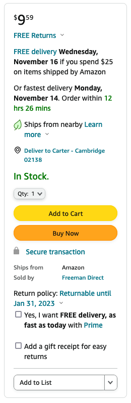

Ships from Nearby
If you’ve ordered an item from Amazon before, you might have noticed that, sometimes, it Ships from nearby, which means the “item typically ships from a nearby warehouse,” thereby reducing the carbon emissions required to deliver it. For this problem, we’ll explore the design decisions that go into Amazon being able to tell you that an item ships from nearby.

In order to tell you an item ships from nearby, Amazon presumably first needs to check that the item is in stock and, if it is, where it’s located. Suppose that Amazon uses a SQLite database to keep track of warehouses’ inventories (i.e., the items they have in stock). And suppose that:
- Amazon needs to know a warehouse’s name, latitude, and longitude.
- Amazon needs to know an item’s name, the quantity in stock, and the warehouse at which that quantity is stored.
- At Amazon’s scale, the same item might be present at multiple warehouses, in different quantities.
- (4 points.) Create a file called
schema.sql. In that file, propose (by writing one or moreCREATE TABLEstatements) how best to represent Amazon’s warehouses and the items that Amazon has in stock. Be sure to usePRIMARY KEYandFOREIGN KEYas appropriate. No need to create any indexes.
Suppose that Amazon actually uses the SQLite database that you proposed. And suppose that Amazon has a helper function called find_availability via which to determine in which warehouses an item with item_id is in stock, per the below:
from cs50 import SQL
db = SQL("sqlite:///amazon.db")
def find_availability(item_id):
"""Returns a list of warehouses in which an item with `item_id` is in stock"""
...
- (2 points.) Would it be better for
find_availabilityto return alistof warehouses’ names or unique IDs or something else altogether? In no more than three sentences, why? - (3 points.) Create a file called
find_availability.pyand copy/paste the above “distribution code” into it. In the file, complete the implementation offind_availabilityin a manner consistent with your own SQLite database. Remember you need only return a list of warehouses’ names (or unique IDs or something else altogether) in which an item is available—no need to worry about ordering by distance or the like!
Suppose that Amazon renders its web page for an item using the route below:
@app.route("/item")
def item():
item_id = request.args.get("item_id")
warehouses = find_availability(item_id)
return render_template("item.html", nearby=check_nearby(warehouses))
You can assume check_nearby takes a list of warehouses as an argument and returns either True or False.
-
(2 points.) Complete the implementation of the
blockin the template below in such a way that it conditionally displays “Ships from nearby”, depending on the value ofnearby:{% extends "layout.html" %} {% block body %} {% endblock %}